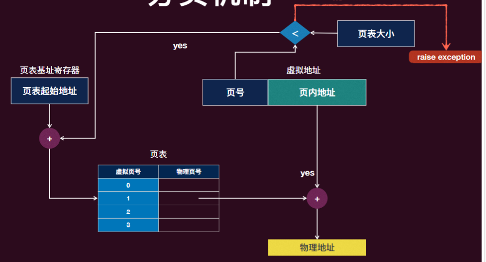
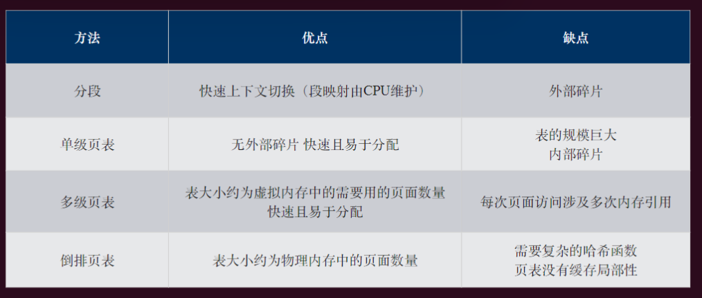
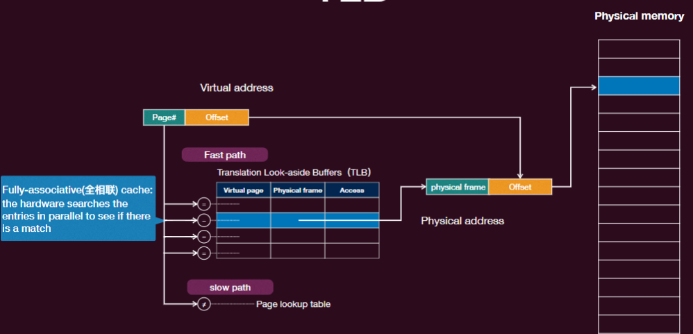

操作系统-11虚拟化-内存管理
物理内存：没有其他意义，只是存储（易失）运⾏信息的⼀个物理介质
- 连续字节/字（Byte）的数组，每⾏都有⾃⼰的地址（ 位地址总共有个字节）
- 通过地址可以写/读相应的字节
- 地址和数据分别通过地址总线和数据总线进⾏传播
保护
有了进程抽象，内存就有了“语义”
- 其代表了当前进程的“状态”！
- ⽽这个“状态”应该遵循状态机（即进程）的规约⽽改变
- 违背规约就会出现“undefined state”， 从⽽导致“undefined behavior”, 因此作为状态机的管理者—操作系统，必须提供出现违背规约之后的保护
哪些“状态”的改变操作是⾮法的呢？
- 修改别的状态机的状态！
- 需要界定状态机的边界（哪些内存是⾃⼰的，哪些是别的状态机的）
- 增加状态机的⼤⼩时，占⽤的额外空间还处于“有⽤”状态
- 我们只能申请“空闲”的内存来增加状态机的⼤⼩，⽽不能使⽤尚被占⽤的空间 （⽆论是被别的进程还是⾃⼰占⽤），因此得维护什么是“空闲”内存
- 不遵守状态机的内部状态的读、写权限
- 需要标记内存块的权限，并且能 assert 相应的读写是否符合权限
使用物理地址的缺点
- 物理地址对应⽤是可知的，导致：
- ⼀个应⽤会因其他应⽤的加载⽽受到影响 (loader 加载器压⼒骤增)
- ⼀个应⽤可通过⾃身的内存地址，猜测出其他应⽤的加载位置
- 是否可以让应⽤看不⻅物理地址？
- “看不⻅”，指应⽤对物理地址不可知
- ⼀个进程不⽤关⼼其他进程占了什么地址，不受其他进程的影响
- 看不⻅其他进程的信息，带来更强的隔离和保护能⼒
—>
虚拟内存抽象
以虚拟内存抽象为核⼼的内存管理
- CPU:⽀持虚拟内存功能，新增了虚拟地址空间（通过 Memory Management Unit, MMU 单元）
- 操作系统: 配置并使能虚拟内存机制
- 所有软件: 均使⽤虚拟地址，⽆法直接访问物理地址
虚拟/逻辑地址（ Virtual/Logical Address）
- 虚拟内存抽象下，程序使⽤虚拟地址访问主存
- 虚拟地址会被硬件"⾃动地"翻译成物理地址
- 每个应⽤程序拥有独⽴的虚拟地址空间
- 应⽤程序认为⾃⼰独占整个内存 (透明性)
- 应⽤程序不再看到物理地址
- 应⽤加载时不⽤再为地址增加⼀个偏移量
地址翻译
翻译就是⼀个函数 : 其将 ⟨pid, virtual address⟩ 映射到 physical address
优点，可以很⾃然地提供：
- 保护：让不同的进程映射到不同的区域即可（即两个进程的映射函数的值域不相交）
- 重定位：进程被映射到的物理地址可以在运⾏时不断变化（运⾏时，不是编译时，因此是动态重定位
- 数据共享：将不同进程的不同虚拟地址映射到同⼀个物理地址
- 连续空间假象：虚拟地址中的连续地址空间（编程友好），映射到物理内存可以不必连续
连续内存分配
最简单的内存分配⽅式，进程（包括操作系统内核）被分配⼀个连续的物理内存地址
利⽤基址和界限机制隔离⽤户进程之间的地址空间，以及防⽌⽤户进程修改操作系统的代码和数据
多个进程时需要将物理内存进⾏分割，每个进程占据⼀个连续的物理内存分区，有两种分割⽅式
- 固定分区：物理内存⼀开始就被分为“固定”⼤⼩的区域，各个区域的⼤⼩可以相同，也可以不同，⼀个进程选择⼀个空闲区域进⾏分配
- 可变分区：物理内存区域⼤⼩和数量是可变的，根据进程的具体需要分配相应的空间
- 需要维护⼀个空闲的内存集合，开始是整个巨⼤的空间，但随着进程的分配和回收，内存会存在很多⼤⼩不⼀的空闲的“孔”
固定分区的问题：如果⼀个进程所需要的空间⾮常⼤，这种固定分区就不适⽤了
- 此外，进程的 size 各种各样，但只能选择⼀个分区存放，这个分区⼤于进程的部分就是⼀个内部碎⽚（internal fragmentation），其⽆法被其他进程占 ⽤，⾃⼰也不⽤
- 此外，固定的分区数也限制了可以同时放⼊内存的进程数
可变分区：可以⽀持动态的按需分配空间
- 当⼀个进程需要加载到内存时，操作系统从⼀个⾜够⼤的空闲块分配内存（多了的部分进⾏分割（splitting）为剩余的空闲块）
- 当进程终⽌时释放其分区，并且与相邻的空闲分区合并（合并， coalescing）
鉴于⼤多数进程在运⾏时会增⻓，在加载进程时会分配⼀些额外的内存。
此外，如果给进程所分配的区域⽤完，那么该进程将可能：
- 被移动到⼀个有⾜够空间的空闲区域中
- 被交换（Swap）出内存（⾄磁盘），直到能够创建⼀个⾜ 够⼤的空洞
- 或者直接被终⽌
碎片
指⽆法被分配的未使 ⽤内存
- 外部碎⽚（空洞）：由于分散的⼩的不连续的空闲空间导致的内存浪费，发⽣在分区之间， 通常是由于进程的不断加载和释放造成
- 内部碎⽚：由于分区⼤⼩和加载的进程⼤⼩之间的差异（即进程⼩于分配的分区）导致的内存浪费，发⽣在分区内
外部碎片的处理方法：
- 进程终⽌或暂时交换出磁盘，可以释放内存，可能会合并⼀些碎⽚形成⼤的可分配区域
- 通过紧缩（compaction）减少外部碎⽚化
- 重排内存内容以将所有空闲内存放在⼀起
- 时间复杂度较⾼（⼀般在系统实在没有内存的情况下才会做，内存分配 slow path 的⼀部分）
空闲内存管理
为了实现动态可变分区内存分配，操作系统应维护以下信息：
- 已分配的分区
- 空闲的分区（空洞）
⼀种简单的办法：Bitmap
- 内存被划分为分配单元（⼏字节到⼏千字节）
- 每个分配单元对应位图中的⼀位，如果该单元空闲则该位为 0，如果被占⽤则该位为 1（或反过来）
⼀个更加常⽤的做法：空闲内存链表
我们还需要跟踪已分配区域的⼤⼩ ‣ 这样 free (*p) 时才能正确的返回⼀个正确的空闲结点
- ⽅法：每次多 malloc ⼀点空间记录元信息
基本分配策略
不同的策略会影响分配和回收的性能和有效性（⽐如碎⽚数量）
- Best-fit：分配最⼩的⾜够⼤的空闲区域（尽可能物尽其⽤）, 需要遍历整个列表
- 但可能导致产⽣微⼩且⽆⽤的外部碎⽚
- Worst-fit：分配最⼤的空闲区域
- 剩余的部分最⼤，可以为其他进程所占⽤，⽽不是形成碎⽚，但同样遍历整个列表
- First-fit：分配第⼀个⾜够⼤的空闲区域（尽可能少搜索）
- Next-fit：跟踪上次适配的位置，并从上次搜索结束的地⽅开始搜索 （尽可能均匀的搜索整个空间）
性能还是问题
- 链表找还是太费⼒了
- 其搜索的算法复杂度是
- 更好的数据结构
- ⽐如：红⿊树，结点存放的空闲内存的⼤⼩，这样就可以以的复杂度搜索相应的内存
- 但还有⼀个问题，当 free 之后，如何合并？
- 在地址上，相邻的空闲块才能合并，因此空闲的结点链表应该按照地址进⾏链接，然后 free 的时候扫描整个链表
- 有没有更加⽅便的合并？
伙伴系统 Buddy System
伙伴系统的好处在于合并效率⾼：
- ⽐如如果将这个 21KB 的块归还给空闲列表
- 分配程序会检查“伙伴”32KB 是否空闲。
- 如果是，就合⼆为⼀，变成 64KB 的块。然后会检查这个 64KB 块的伙伴是否空闲，如果是，就合并这两块。
- 这个递归合并过程继续上溯，直到合并整个内存区域，或者某⼀个块的伙伴还没有被释放
伙伴的位置⾮常容易得到（其地址和伙伴只有⼀位不同，⽽正是这⼀位决定了它们在整个伙伴树中的层次）
Buddy System 已经是 linux 内部分配“⼤”粒度的连续的物理⻚⾯的⽅法了
但还是存在⼀些问题：
- 内部碎⽚
- 只允许分配 2 的整数次幂⼤⼩的空闲块（实际上，伙伴系统分配的最⼩单位是 4K，即⼀个物理⻚），因此如果不是 2 的整数次幂的⼤⼩，会有内部碎⽚ -
- ⽐如刚刚的例⼦中有 32K-21K ⽆法使⽤（属于该进程，但该进程没有使⽤ 他们，也不能被其他进程使⽤）
Segregated List (Slab) 分配器
操作系统⾥⾯的结构体⼤⼩常为⼏⼗、⼏百字节
- Buddy System 来分配的话会产⽣⼤量的碎⽚
经验观察：
- 系统频繁分配的对象⼤⼩相对⽐较较⼩且固定
- ⼩对象分配/回收的 scalability 是 System 内存分配的主要瓶颈
Slab 分配器
- 目标：快速分配小内存对象
- 解决方案：
- 从伙伴系统获得大块内存
- 进一步细分成固定大小的小块内存进行管理
- 块大小通常是 个字节（可额外增加特殊大小）
Fast path
- Per CPU 从当前 slab 中取出⼀个适合⼤⼩的块（快速，没有和其他 CPU 的竞争）
low path
- 需要从⼀个全局的 partial ⾥去找⼀个作为当前的 slab，不巧的话（paritial ⾥也没空闲内存），甚⾄需要从 buddy system ⾥重新分配连续空间，再次分割为可⽤的 slab
连续内存分配的问题
- 如果直接分配给进程内存的话，stack 和 heap 中间的部分都被浪费了
- 内部碎片无法避免
- ⽆法和其他进程共享内存（⽐如代码和 glibc）
- 主要是保护机制粗糙，整体空间的保护，没有精细到具体的部分内存
分段 Segment
⽤户视⻆的内存管理
- 将程序视为⼀组段（segments）
- 段是虚拟内存空间的连续区域，是⼀个逻辑单元
- 例如代码段、栈、堆等
- 按照这样的段分配内存
每个段独⽴映射到物理内存中的⼀组连续地址
- 没有特定的顺序
- 不需要映射未使用的虚拟地址
- 可以消除内部碎片
- 不同的段可以独立增长或缩减
分段底层机制
虚拟地址空间分成若干个不同大小的段
- 段表（每个进程对应⼀个）存储着每个分段的信息（由段号索引），可供 MMU 查询表
- 段基址（Segment Base）：段在内存中所在的起始物理地址
- 段界限（Segment Bound）：段的⼤⼩
- 虚拟地址分为：段号 + 段内偏移地址
物理内存也是以段为单位进行分配
- 虚拟地址空间中相邻的段，对应的物理内存可以不相邻
支持共享
- 多个虚拟地址空间可以映射到内存中的同一个段
- 比如：只读代码的一个副本在进程间共享，一个可执行文件被加载多次
- 也可以用作进程间通信
- 段表需要增加保护位
- 指示程序是否具有相应段的读/写/执行权限
- 每个进程仍然任务它在访问自己的私有内存（透明性）
OS 对段表机制的支持
- 操作系统应在上下⽂切换时保存和恢复段表（指向段表的寄存器）
- 当段增⻓或缩⼩时，操作系统应进⾏交互（更新段表）
- 创建新的地址空间时，操作系统应在物理内存中为其段找到空间
- 操作系统维护着空闲内存块
- 由于段的长度各不相同，内存分配是一个动态内存分配问题
- 需要分配和合并
分段机制的问题
- 分配的粒度太粗，随着时间的推移会产⽣外部碎⽚
- 如果是⼀个⼤但使⽤稀疏的堆?
- 如果地址空间的使⽤模型与段设计不匹配怎么办？
分页 Paging
更细粒度的内存管理
- 物理内存被划分成连续的、等⻓的物理⻚（也叫帧 frame）
- ⼤⼩⼀般为 2 的幂，⽐如默认是 4KB
- 虚拟内存也被划分为相同⼤⼩虚拟块—虚拟⻚（Page）
- 任意虚拟⻚可以映射到任意物理⻚
- ⾮常灵活，不需要是连续的空间
- 由于都是按照⻚为单位分配内存
- 没有外部碎⽚
虚拟地址分为：
- 虚拟页号 + 页内偏移
每个进程都有一个页表 Page Table，每个页表项包含一个物理页号，也叫物理帧号，指示每个页在物理内存中的基地址

页表
⻚表最简单的形式称为线性⻚表（⼀个数组），存储在物理内存中
⻚表项（PTE）的具体布局⾼度依赖于机器
- 需要足够的位来标识
- 应包括一些控制位
页表项中常见的控制位
- 有效位（Valid bit）：转换是否有效（⽀持稀疏空间）
- 存在位（Present bit）：⻚⾯是否实际存储在内存中
- 保护位（Protection bits）：⻚⾯是否可以被读取、写⼊或执⾏
- 引⽤位（Reference bit）：⻚⾯是否已被访问
- 脏（修改）位（Dirty/modified bit）：⻚⾯⾃被载⼊内存以来是否已被修改
单级页表的问题
解决方案 -> 多级页表
页表页
- 每级⻚表有若⼲离散的⻚表⻚
- 每个页表页占用一个物理页
- 第 0 级（顶层）页表有且仅有一个页表页
- 页表基地址寄存器存储的是该页的物理地址
- 每项为 8 个字节
- 总共 4096/8 = 512 项，⽤于存储物理地址和权限
- 可以不只是两级的⻚表
问题：太多虚拟页了，而物理页是少的
倒排页表
不再为每个进程分别维护多个⻚表，⽽是保留⼀个单⼀的⻚表，每个物理⻚对应⼀个条目
每个⻚表条⽬包括：
- 使⽤该物理⻚的进程 (Pid)
- 该进程的哪个虚拟⻚映射到该物理⻚
减少了存储⻚表所需的内存，但增加了在发⽣⻚引⽤时查找表所需的时间
- 使用哈希表来加速查找
此外一个问题是无法共享
地址翻译比较

段页
多级页表不是完美的
- 多级⻚表的设计是典型的⽤时间换空间的设计
- 能够减⼩⻚表所占空间
- 但是增加了访存次数 (逐级查询，级数越多越慢)
- 即使是单极页表，也需要访存两次才能真正得到物理内存上的数据
Translation Look-aside Buffers TLB 地址转换旁路缓冲
如何加速分⻚的地址转换？
- 观察：⼤多数程序倾向于对少量⻚⾯进⾏⼤量引⽤
- 使⽤⼀种特殊的快速查找硬件缓存，称为翻译后备缓冲器（TLB）或联想存储器（在内存管理单元中）
缓存最近地址转换
- 如果 TLB 命中，直接应⽤转换（fast path）
- 否则，如果 TLB 未命中，则在⻚表中查找映射（⻚表遍历），并更新 TLB (slow path)

局部性原理
TLB 背后的理念是利⽤指令和数据引⽤的局部性
- 时间局部性：如果某个数据被访问过，那么在不久的将来它可能会再次被访问
- 空间局部性：如果某个数据被访问过，那么它附近的数据在不久的将来也可能会被访问。
TLB 通常很⼩，包含 64 到 1024 个条⽬
- 存储最可能被多的选中的地址翻译才能⾼效发挥 TLB
- ⽀持某些条⽬可以固定下来以便永久快速访问
处理 TLB Miss
在 TLB 缺失时，值被加载到 TLB 中，以便下次更快地访问。
但如果 TLB 已满，应该替换谁呢？
- 先进先出
- 最近最少引用 LRU
- 随机
谁来处理？
- 硬件处理（如 x86 这样的 CISC 架构）
- 当 TLB 缺失时，硬件进⾏⻚⾯遍历，获取⻚表项，并将其插⼊ TLB
- 硬件必须确切地知道⻚表在内存中的位置（通过 PTBR 寄存器），以及它们的确切格式
- 更加迅速，对系统软件透明地完成
- 软件处理的 TLB Miss（如 MIPS 这样的 RISC 架构）
- 当 TLB 缺失时，硬件会引发异常（TLB 故障）
- 操作系统内部的代码处理 TLB 缺失（返回指令与系统调⽤返回不同）
- 更加灵活（如可以定制替换策略等）
TLB 一致性
- 上下⽂切换时，旧进程的虚拟到物理地址的转换应该不再有效，否则就会出现同样的虚拟地址映射到不同物理地址的问题，解决⽅案有两种：
- 清空 TLB：简单地将所有有效位设置为 0
- 带标记的 TLB：在每个 TLB 条⽬中添加⼀个地址空间标识符（ASID）字段， 该字段唯⼀地标识每个进程，为该进程提供地址空间保护